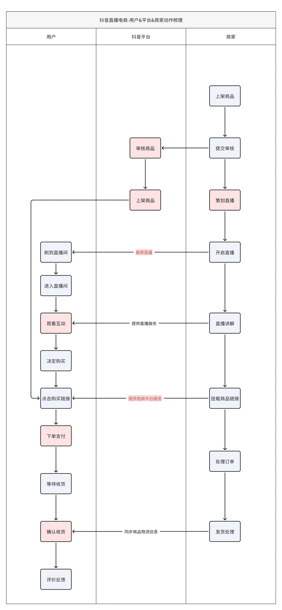
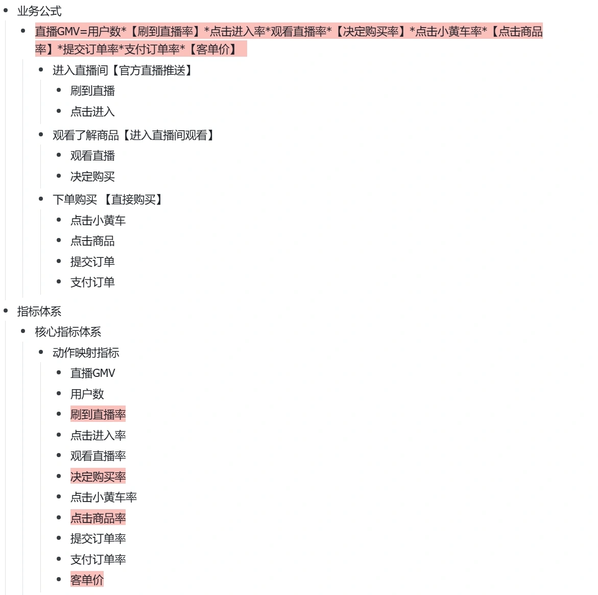
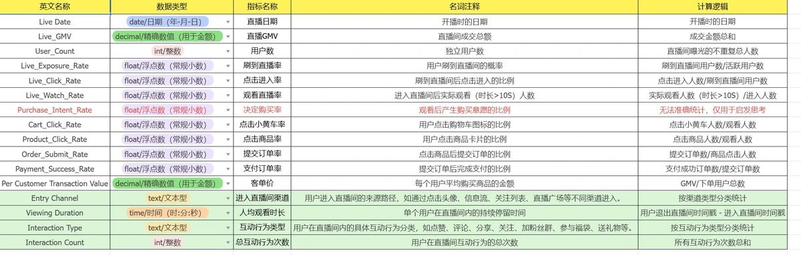
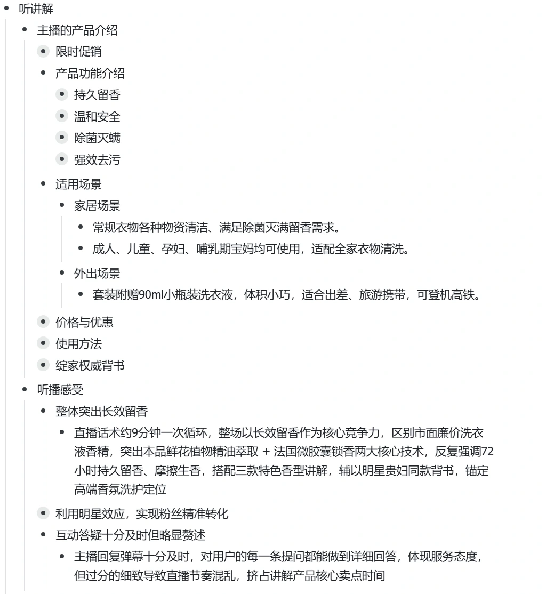

抖音电商直播指标体系分析
基于实习期间接触的真实业务分析场景，后续独立复盘直播业务链路、指标体系与异常诊断方法。
从真实业务场景出发，完成后续个人复盘
本项目基于实习期间接触的直播电商真实业务分析场景进行后续复盘与体系化整理，重点重新梳理直播业务链路、指标体系及异常诊断方法。
真实业务来源
实习期间参与经营指标异常分析、漏斗拆解、策略验证和效果跟踪，接触真实业务问题及验证过程。
个人项目范围
在实习案例基础上，独立完成业务梳理、指标体系设计、转化漏斗分析与案例复盘，形成可复用的诊断框架。
围绕 618 场景，梳理人—货—场与成交链路
结合 618 大促场景，以直播间用户从接触到成交的路径为主线，拆解用户、平台和商家的动作，以及“人—货—场”之间的关系。
人：观看与互动
梳理用户进入、观看、互动、点击商品和购买动作，同时观察主播讲解与答疑。
货：商品与利益点
围绕商品核心卖点、使用场景、价格优惠和赠品，分析用户理解产品价值的过程。
场：直播流程
关注平台推荐、商品链接、画面呈现与夜场衔接，串联从曝光到支付的完整过程。
{kind=link}

查看高清图 ↗以 GMV 为核心，建立全链路指标体系
以直播 GMV 为核心，将曝光、点击、观看与转化动作映射到指标，并通过数据字典记录名称、数据类型、业务含义和计算口径。
{kind=link}

查看高清图 ↗{kind=link}

查看高清图 ↗沿转化漏斗定位关键流失环节
使用比率指标减少规模差异对判断的影响，围绕小黄车点击等关键节点逐层拆解，并结合直播话术、互动答疑和画面展示观察形成诊断线索。
{kind=link}

查看高清图 ↗场景化讲解
把抽象卖点放回用户具体的使用情境，解释产品与用户需求之间的关系。
讲清利益点
将价格、优惠和赠品层次讲清楚，帮助用户理解组合价值。
答疑与节奏
针对反复出现的问题前置视觉说明，用简洁话术承接，减少重复答疑打断讲解。
展示与衔接
改善卡片的近远景展示，并针对夜场处理订单时的空档完善过渡流程。
复盘真实案例中的策略验证流程
结合实习期间参与的真实业务异常分析案例，复盘从异常识别、漏斗拆解、问题定位到策略验证及效果跟踪的完整流程。
相关实验下单转化率提升
在实习期间参与的相关业务案例中，策略经过小流量实验验证后，直播间下单转化率提升 11.2%。该结果属于实习业务案例，不是后续个人复盘项目直接产生的成果。
把案例经验沉淀为可复用的诊断思路
在真实业务案例基础上，对业务链路、指标体系、漏斗诊断和策略验证过程进行重新梳理，形成可复用的直播电商诊断思路。
分析框架沉淀
将真实案例中的分析步骤整理为从异常识别、指标拆解到验证跟踪的完整路径。
指标体系设计
把业务动作、指标定义和计算口径对应起来，为后续分析建立统一基础。
诊断方法复盘
结合漏斗比率与听播观察定位问题，区分数据表现、业务假设与待验证策略。